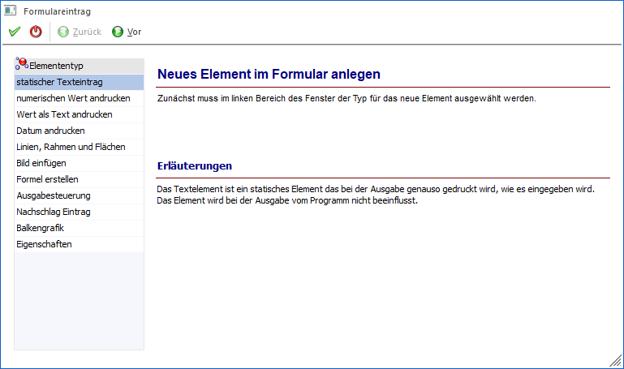

Mit dem Fenster "Formulareintrag" wird ein Assistent geöffnet, der bei der Anlage von neuen Elementen oder bei der Bearbeitung von bestehenden Elementen im Formular Editor hilft.
Grundsätzlich gibt es mehrere Möglichkeiten, wie dieses Fenster geöffnet werden kann:
ü Durch einen Doppelklick auf ein bestehendes Element im Formular Editor.
ü Durch Anklicken der rechten Maustaste und Auswahl der Option "Eigenschaften", wenn ein Element aktiviert wurde.
ü Durch Anklicken des Buttons "Neuer Eintrag".
Wird das Fenster durch den Button "Neuer Eintrag" geöffnet, dann kann im ersten Schritt ausgewählt werden, welcher Typ von Element eingebaut werden soll.
Hinweis
Die Parametrisierung bzw. Definition von Elementen, welche im Assistenten nicht zur Verfügung stehen, erfolgt ausschließlich über die Eigenschaften.

Im ersten Schritt des Assistenten kann der Typ des neuen Elements gewählt werden, wobei diese in den nachfolgenden Kapiteln detailliert beschrieben werden:
ü statischer Texteintrag
Mit diesem
Typ kann ein Fixer Text angedruckt werden.
ü numerischen Wert andrucken
Mit
diesem Typ kann eine Zahl angedruckt werden, wobei es hier einige zusätzliche
Einstellungen für die Formatierung der Zahl gibt.
ü Wert als Text andrucken
Mit diesem
Typ kann eine Textvariable (z.B. Name) angedruckt werden.
ü Datum andrucken
Mit diesem Typ kann
ein Datum in den verschiedensten Formaten angedruckt werden.
ü Linien, Rahmen und Flächen
Mit
dieser Option können Linien, Rahmen oder Flächen hinzugefügt werden.
ü Bild einfügen
Damit können Grafiken
wie Firmenlogos oder dergleichen in das Formular eingebaut werden.
ü Formel erstellen
Mit dem Typ
"Formel erstellen" können komplexe Berechnungen durchgeführt werden.
ü Ausgabesteuerung
Mit der
Ausgabesteuerung können neben Druckereinstellung auch noch andere Optionen wie
Mailversand oder SQL-Abfragen gesteuert werden. Auch hier ist wieder die
entsprechende Lizenz erforderlich.
ü Nachschlag Eintrag
Ein
Nachschlag-Eintrag dient dazu, eine Referenz von einer Variable zu einer anderen
Variable, die im direkten Zusammenhang stehen, aufzubauen. Auch dieser Typ steht
nur bei einer entsprechenden Lizenz zur Verfügung.
ü Balkengrafik
Damit kann ein
numerischer Wert in Form eines Balkens dargestellt werden.
ü Eigenschaften andrucken
Mit diesem
Typ können Eigenschaften aus den diversen Stammdatenbereichen angedruckt
werden.
Buttons
Ø Ok
Durch Anwahl es Buttons "Ok" bzw. der Taste F5 wird das neue Element gespeichert und das Fenster geschlossen.
Ø Ende
Bei Anwahl des Buttons "Ende" bzw. der Taste ESC wird das Fenster geschlossen und alle nicht gespeicherten Eingaben verworfen.
Ø Zurück / Vor
Mit Hilfe der Buttons "Vor" bzw. "Zurück" kann durch die einzelnen Schritte des Assistenten navigiert werden.